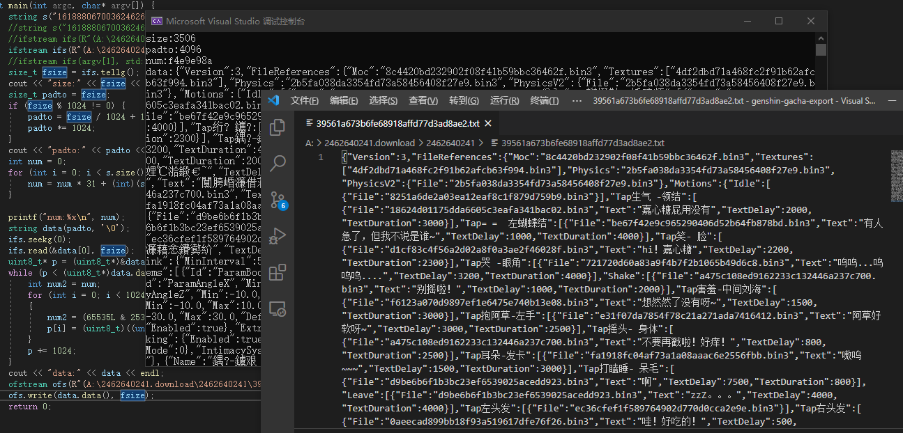
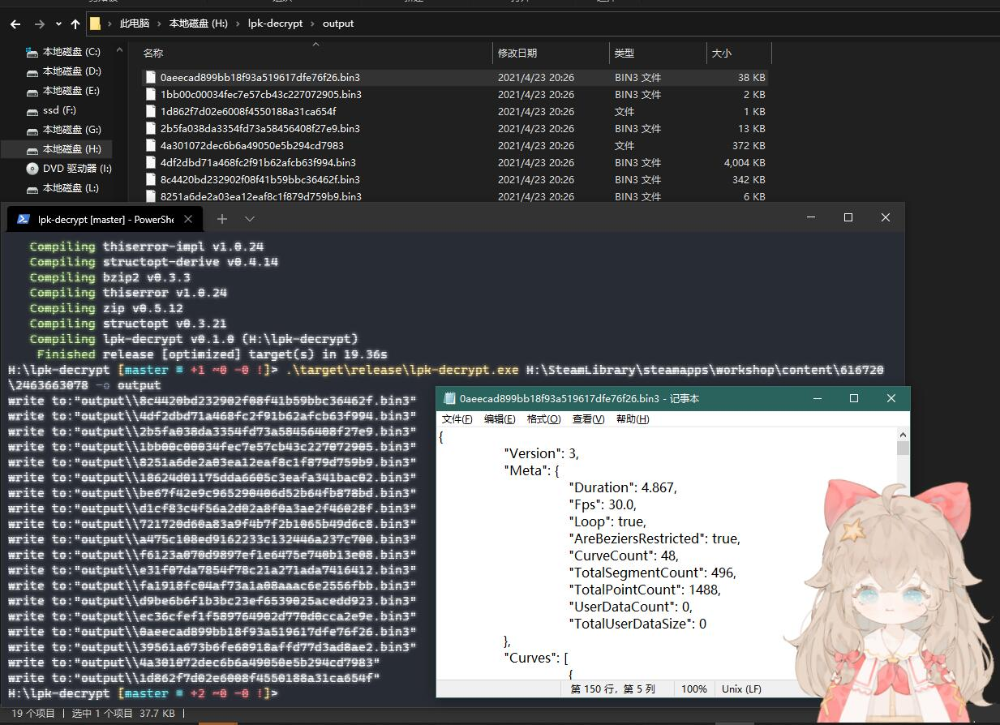

最近好累啊。简单写写吧。
首先是。最近有了个这个视频。敲可爱的然然live2d，上的是LiveEDViewerEX平台。
然后bt玩水想要扒下来放博客上，但是Live2dViewerEX的创意工坊作品是他自己的lpk格式，内容都是加密的。
然后我就随口说了句你买一个给我我帮你逆啊，接着玩水就真的打钱了。。
既然钱收了白嫖一个可爱然然不做事也不行吧。所以就开始研究这个lpk加密了。
为了保护原作者的权益，一些地方就不说得太详细了。
简单看了一下，lpk就是一个zip文件，里面的文件名带bin3后缀的为加密内容，不带后缀的是未加密内容。固定有个描述文件，描述文件名也是固定的（是个固定字符串的md5值），还有封面图片也是未加密的。
接下来的重点应该就是放在bin3文件的解密上了。
软件是用unity做的，但是因为本身不怎么做逆向，对unity的分析更是没有经验，所以一开始选择的是直接上native调试器分析lw.exe。unity是用的一个启动器加载mono环境执行的c#编译出来的字节码，所以直接调试收获不大。
因为live2d部分调用的官方sdk,正好可以hook掉加载模型的接口，可以直接获得moc3文件内容，但也仅此而已了。
后来查了查unity相关的内容，发现程序主要的逻辑会放在Assembly-CSharp.dll中，是个c#编译出来的dll。可以直接丢Reflector中做反编译。
反编译出来的代码关键部分都做了混淆，假的解密函数就有不少，相互之间互相调用，根据静态分析属实难以找到正确的解密算法。
第二天上班正好问起了领导有没有办法可以动态调试这种情况（毕竟是安全领域公司逆向组的组长，见识还是不少的）。领导直接就甩了个名字过来让我自己研究。
dnSpy看了看，完全就是用来调试unity的工具！根据说明配置好直接就能调试到程序里面去了。
具体分析步骤就不说了，简简单单的就找到对应算法了。用c艹简单写了个poc确实是能够解出原始数据。

然后用rust写了个通用解密器，完事。剩下的就是和我可爱的桌面然然一起玩啦。

@